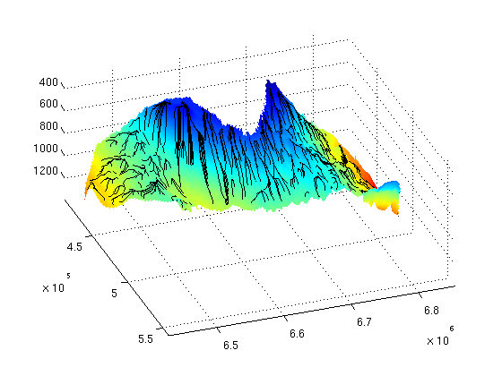
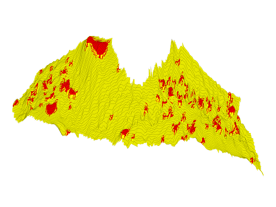
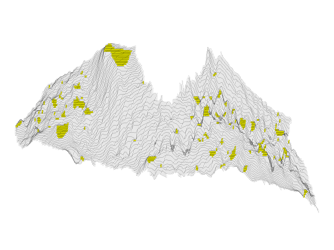
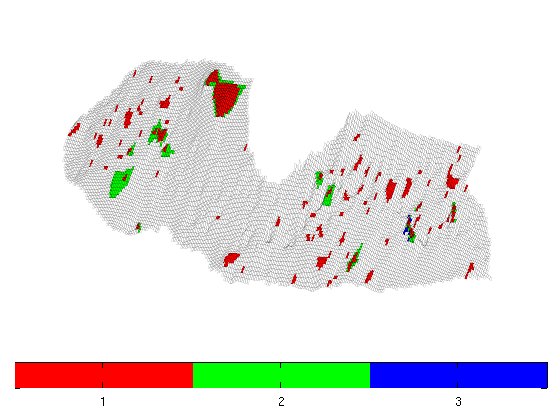
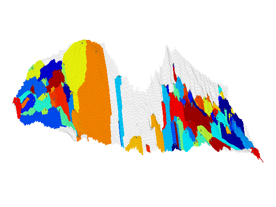
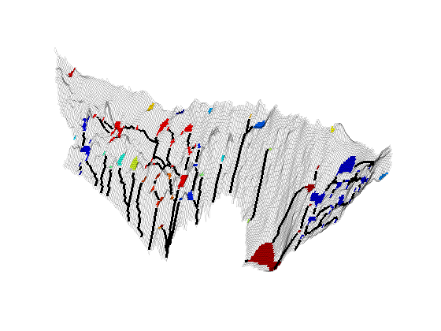
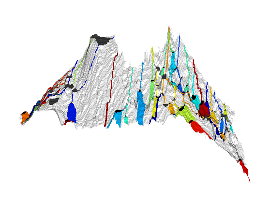

Investigation of Structural Trapping
The purpose of the example is to demonstrate some of the functionality we have available for studying migration patterns and finding structural trapping. As an example, we consider the Utsira formation for which we will trace gravity lines, identify structural traps, and investigate how they are connected.
Contents
Load data
Make top-surface grid from a coarsened version of the Utsira formation
[grdecl,m] = getAtlasGrid('Utsirafm','coarsening',3); G = processGRDECL(grdecl{1}); Gt = topSurfaceGrid(G(1)); meta = m{2}.meta; data = abs(m{2}.data)'; data(data==0) = NaN;
Trace gravity lines on the top surface
To show the potential migration paths, we trace 'gravity' lines in the upward direction using a flux defined on a standard TPFA type connection
% Define flux internal = all(Gt.faces.neighbors>0,2); n1 = Gt.faces.neighbors(internal,1); n2 = Gt.faces.neighbors(internal,2); flux = zeros(Gt.faces.num,1); flux(internal)= Gt.cells.z(n2) - Gt.cells.z(n1); state = struct('flux',flux); clear internal n1 n2 flux; % Pick approximately five hundred cells and trace streamlines backward % using the Pollock routine from MRST's streamlines module mrstModule add streamlines seeds = (1:ceil(Gt.cells.num/500):Gt.cells.num)'; S = pollock(Gt, state, [seeds, repmat([.5,.5],numel(seeds),1)], 'reverse', true); % Make Cartesian grid for fast interpolation to surface y = linspace(0,meta.cellsize*(meta.ncols-1),meta.ncols) + meta.yllcorner; x = linspace(0,meta.cellsize*(meta.nrows-1),meta.nrows) + meta.xllcorner; [X,Y] = meshgrid(x,y); clear x y; % Collect streamlines in a long array separated by zeros and calculate the % corresponding z-value by interpolating in the original meta data set. % Afterwards, replace zeros by NaN's for use in plotting. c = zeros(sum([cellfun(@length,S); numel(S)]),3); i = 1; for k=1:numel(S) nsl = length(S{k}); c(i:i+nsl-1,1:2) = S{k}; i = i+nsl+1; end c(:,3) = interp2(X,Y,data, c(:,1), c(:,2)); c(c==0)=NaN; % Use the original meta data to surf make the surface, but offset the plots % slightly to distinguish the surface and the gravity lines figure(1),clf surf(X,Y,data+1),shading interp hold on plot3(c(:,1),c(:,2),c(:,3)-1, 'k-', 'LineWidth', 1); hold off view(70,50), axis tight, set(gca,'ZDir','reverse');
Find trapping structure
We find all traps corresponding to local maxima on the top surface. The traps are categorized as different levels. A level-1 trap contains one local maximum point; a level-2 trap contains at least two level-1 traps and hence at least one spill point; a level-3 trap contains at least two level-2 traps; and so on. As part of finding the trapping structure, we construct a new top-surface grid for which the topography inside the level-1 traps have been replaced by a flat surface at the depth of the corresponding spill point.
% Check for existence of the MATLAB graph library checkBGL(); ts=findTrappingStructure(Gt); % Plot the new top-surface grid on top of the old one to show the location % of traps clf, subplot('position',[.025 .025 .95 .95]); plotGrid(Gt, 'FaceColor','r','EdgeAlpha',.1) plotGrid(ts.Gtop, 'FaceColor','y','EdgeColor','none'); view(92,40), axis tight off, set(gca,'ZDir','reverse');
Trap level 1: 102 traps identified Trap level 2: 13 traps identified Trap level 3: 1 traps identified
Show the flat parts of the grid
cla plotGrid(ts.Gtop,'FaceColor','none','EdgeAlpha',.1) plotGrid(ts.Gtop, ts.z_spill_loc>0, 'EdgeAlpha', .1)
Show the traps on different levels in different colors
cla plotGrid(ts.Gtop,'FaceColor','none','edgeAlpha',0.1) nt = numel(ts.trap_level); col = hsv(nt); for k=nt:-1:1 cell_list = []; for i=1:size(ts.trap_level{k},2) cell_list = [cell_list; find(ts.trap_level{k}(:,i)>0)]; %#ok end plotGrid(Gt, cell_list, 'FaceColor', col(k,:), 'EdgeAlpha',.1); end colormap(col); cbh=colorbar('horiz'); caxis([0 nt]+.5);set(cbh,'XTick',1:nt); view(100,70)
All the CO2 that accumulates in a trap must come from the trap's drainage area that consists of all cells that have an updip connection to the trap. We show the drainage/accumlation area of the different traps defined as the cells whose spill paths lead into the corresponding local top point. A spill path is the path that the CO2 will follow in its upward migration when injected infinitesimally slow from a given point
clf, subplot('position',[.025 .025 .95 .95]); % To find the drainage area, we construct a directed graph from the gravity % flux, make this graph bi-directional along each edge, and then compute % the connected components. C = maxTPFAGravityMatrix(Gt); [ci,ss] = components(C+C'); assert(max(ci)==numel(ts.top)) % Set a unique random color for each trap p = zeros(length(ts.top),1); nt = sum(ts.istrap); p(ci(ts.top(ts.istrap))) = randperm(nt)'; % Plot grid, drainage areas for traps, and the local top points plotGrid(Gt, 'FaceColor','none', 'EdgeAlpha', .05) plotCellData(Gt,p(ci), p(ci)>0, 'EdgeColor', 'none'); plotGrid(Gt,ts.top(ts.istrap), 'FaceColor',[.45 .45 .45],'EdgeAlpha',.1); axis tight off, view(85,50), colormap(jet(nt));
Find trap connections (river system)
The CO2 is typically injected low in the formation and if we disregard all other trapping mechanisms, the CO2 will migrate upward until it encounters a structural trap. Once a trap is filled, the CO2 will spill over and start to migrate upward along a spill path and either reach the top of the formation or start to accumulate in a more shallow trap until this trap spills over, and so on. We start by computing the connections between the traps.
mrstModule add coarsegrid trap_con = findTrapConnections(Gt, ts.z_spill_loc); cell_lines = trap_con.cell_lines; traps = trap_con.traps; leaf_lines = trap_con.leaf_lines; leaf_traps = trap_con.leaf_traps; trap_matrix = trap_con.trap_matrix;
Start find rivers
If we invert the axis, the structural trapping may be thought of as water flowing down in a terrain consisting of impermeable soil. The water will collect in ponds and small lakes that are possibly connected by natural watercourses (rivers).
% Find connection stucture of the river network comp = components(trap_matrix+trap_matrix'); trap_comp=nan(size(traps)); % Make vectors representing each independent waterway p = randperm(max(comp)); % to avoid the proximity of similar colors for i=1:numel(comp) trap_comp(i==traps)=p(comp(i)); end cc=[ts.Gtop.cells.centroids,ts.Gtop.cells.z]; [x,y,z] = deal([]); for i=1:numel(cell_lines); x = [x; cc(double(cell_lines{i}),1); NaN]; %#ok y = [y; cc(double(cell_lines{i}),2); NaN]; %#ok z = [z; cc(double(cell_lines{i}),3); NaN]; %#ok end % Plot the 'lakes' and the watercourses clf, subplot('position', [.025 .025 .95 .95]); plotCellData(ts.Gtop,trap_comp) plotGrid(ts.Gtop,'FaceColor','none','edgeAlpha',0.1) hold on plot3(x,y,z, 'k', 'LineWidth', 2) hold off view(280,40), axis tight off; set(gca,'ZDir', 'normal');
As our last example, we will look at leaf nodes in our trapping system, i.e., traps that only have outgoing 'rivers'. The leaf traps are shown in white color. The drainage areas and the resulting migration path are given a unique color so that one can trace the migration of CO2 upward until it either leaves the formation or reaches a higher trap that accumulates CO2 from multiple leaf traps. All traps that are not leaf traps are shown in dark gray.
% Plot traps and grid cla plotGrid(ts.Gtop, ts.z_spill_loc>0, 'EdgeColor', 'none', 'FaceColor',[.25 .25 .25]) plotGrid(ts.Gtop, 'FaceColor', 'none', 'EdgeAlpha', .1) % Find leaves and the corresponding traps [ll, tc, dc] = deal([]); C = maxTPFAGravityMatrix(ts.Gtop); nll = numel(leaf_lines); p = randperm(nll); lvol = zeros(nll,1); tic for k=nll:-1:1 % extract the leaf line out of the trap ll = [ll; leaf_lines{k}', p(k)*ones(length(leaf_lines{k}),1)]; %#ok % find all cells in the given trap t_cells = find(traps ==leaf_traps{k}); tc = [tc; t_cells]; %#ok % find all cells in the drainage region of the leaf cc = find( dfs(C', double(t_cells(1))) >0); dc = [dc; cc, p(k)*ones(length(cc),1)]; %#ok % calculate the leaf volume cc = find( dfs(C, double(t_cells(1)))>0 ); lvol(k) = sum((ts.Gtop.cells.z(cc) - Gt.cells.z(cc)).*Gt.cells.volumes(cc)); disp(['Leaf volume : ', num2str(lvol(k))]); end % Plot leaves and the deepest traps plotCellData(ts.Gtop, [ll(:,2); dc(:,2)], [ll(:,1); dc(:,1)], 'EdgeColor', 'none'); plotGrid(ts.Gtop, tc, 'EdgeColor', 'none', 'FaceColor', 'w'); view(95,20), axis tight off; set(gca,'ZDir', 'reverse');
Leaf volume : 618782.3458 Leaf volume : 1920205.7847 Leaf volume : 0 Leaf volume : 33295634.1306 Leaf volume : 34577258.0053 Leaf volume : 28458992.5049 Leaf volume : 136488585.5204 Leaf volume : 820247394.6633 Leaf volume : 381407666.5635 Leaf volume : 975677262.5204 Leaf volume : 812477042.3271 Leaf volume : 13273947.4493 Leaf volume : 812032999.8997 Leaf volume : 921435649.9908 Leaf volume : 849094847.046 Leaf volume : 361006825.2235 Leaf volume : 9101232.1556 Leaf volume : 509961.9253 Leaf volume : 36649535.63 Leaf volume : 15594.5838 Leaf volume : 496026164.2495 Leaf volume : 7022319093.149 Leaf volume : 1468444523.9203 Leaf volume : 99286419.5772 Leaf volume : 1469819977.0619 Leaf volume : 2572532.6835 Leaf volume : 228483848.0456 Leaf volume : 1469819977.0619 Leaf volume : 7519927861.7073 Leaf volume : 1009105.2054 Leaf volume : 18805622.7009 Leaf volume : 2621476253.2478 Leaf volume : 1686896.3595 Leaf volume : 1207744737.7059 Leaf volume : 3862613.6834 Leaf volume : 270895768.0561 Leaf volume : 1505263255.3188 Leaf volume : 1505263255.3188 Leaf volume : 582974.0581 Leaf volume : 581524995.8565 Leaf volume : 1218254059.2199 Leaf volume : 34567037.3357 Leaf volume : 1220898307.2355 Leaf volume : 581336917.8887 Leaf volume : 745338740.1382 Leaf volume : 40227970.7599